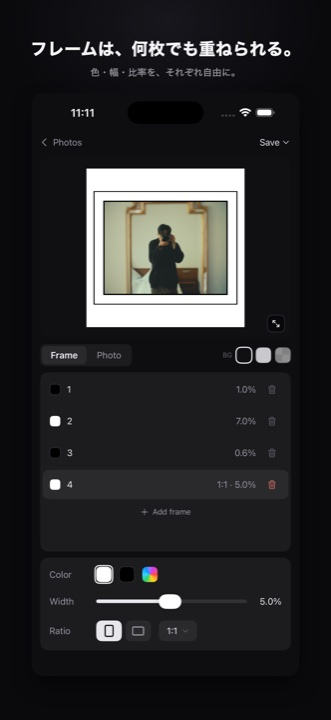
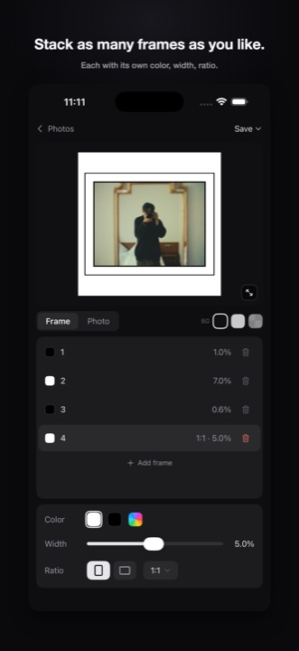
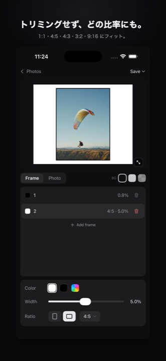

Inset 1.0.0 をリリースしました。写真に「余白のフレーム」を重ねて、作品のように仕上げるアプリです。色・幅・比率を自由に決めて、フル解像度のまま書き出せます。 Inset 1.0.0 is here — an app that layers margin frames onto your photos to make them feel like finished works. Choose any color, width, and ratio, then export in full resolution.
フレームは、何枚でも重ねられるStack as many frames as you like
余白のレイヤーを好きな枚数だけ重ねられます。1 枚ごとに色と幅を個別に設定できるので、細い縁取り＋大きな余白のような組み合わせも自由です。 Layer any number of margins. Each frame has its own color and width, so combinations like a thin keyline inside a generous mat come naturally.


トリミングせず、どの比率にもAny ratio, without cropping
1:1・4:5・3:2・9:16 など、書き出したい比率に余白でフィットさせます。写真そのものは切り抜かないので、構図はそのまま。SNS ごとの最適比率に同じ写真を使い回せます。 Fit your photo to 1:1, 4:5, 3:2, 9:16 and more using margins instead of cropping. The composition stays intact, so one photo works across every platform's ideal ratio.

色は、写真から吸えるPick colors straight from your photo
フレームの色は白・黒・カスタムカラーに加えて、スポイトで写真の中から直接拾えます。ルーペで狙った 1 ピクセルの色を確認しながら選べるので、写真に馴染むフレームが簡単に作れます。 Frames can be white, black, any custom color — or sampled directly from the photo with the eyedropper. A loupe shows the exact pixel you're picking, making it easy to build frames that belong to the image.
プリセットで再利用Reuse with presets
気に入ったフレーム構成は名前を付けて保存。次の写真にワンタップで適用できます。並べ替え・削除も自由です。 Save frame setups you like and apply them to the next photo in one tap. Reorder and delete freely.
フル解像度で書き出しFull-resolution export
書き出しは常に元写真のフル解像度。プレビューで見たままの構図・余白・色で写真ライブラリに保存されます。 Exports always use the photo's full resolution. What you see in the preview is exactly what lands in your library.
プライバシーは設計からPrivate by design
Inset が要求するのは「写真の保存（追加のみ）」の権限だけ。既存のライブラリは読み取りません。編集はすべて端末内で完結し、写真が外部に送信されることはありません。 Inset only asks for add-only photo access — it never reads your existing library. All editing happens on device, and your photos never leave it.
詳しくはプライバシーポリシーをご覧ください。 See the privacy policy for details.
次のアップデートWhat's next
v1.1 では日本語対応・設定画面・アプリ内お知らせなどの改善を予定しています。開発状況は公開ロードマップでいつでも確認できます。 v1.1 brings Japanese localization, a settings screen, in-app announcements, and more. Follow progress anytime on the public roadmap.